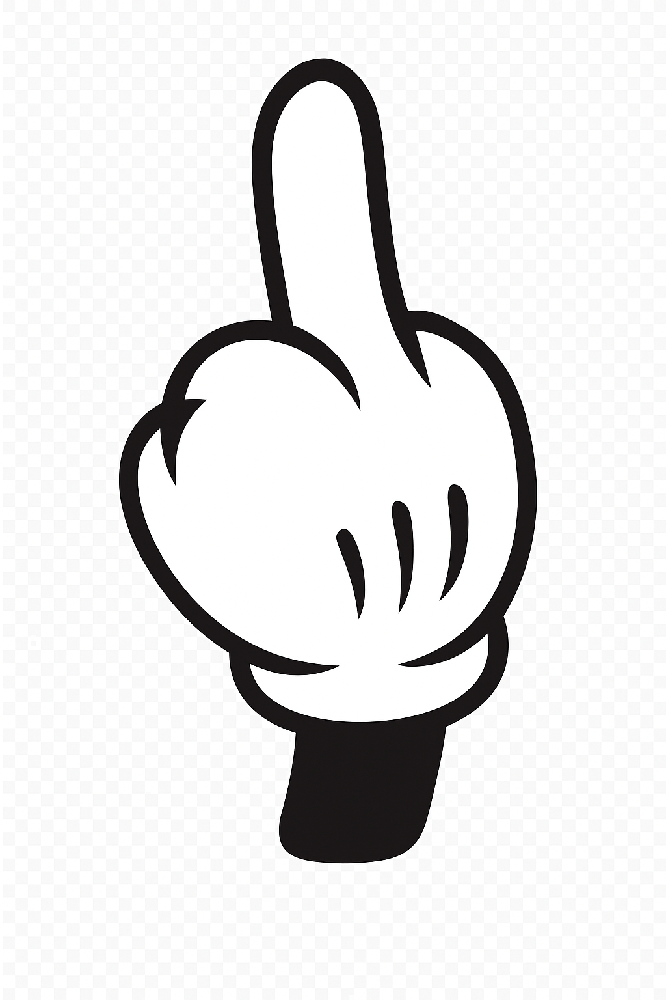

🔒
Admin
anal
—
Tortilla
TV
Video chat aleatorio
Macho
Tortillera
Un Lada
Iniciar con Google
Entrar como invitado
Buscar
Siguiente
Detener
Mute
Apagar cam
AR: 1:1
Listo
Pareja: —
Tú: —
Buscando tortilleras!!!…
⤢
−
+
⟲
−
+
Buscando tortilleras!!!…

Preparando cámara…
Buscar sala
Salir
Salir
Desliza → empezar / siguiente — ← detener
↻
⚙
Mute micrófono